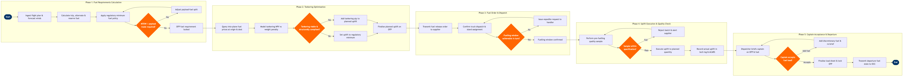

| Step | L4 Step Name | KPI / Target | Pain Point / Risk | Gate |
|---|---|---|---|---|
| 1.1 | Ingest flight plan, route & forecast winds | Wind data currency ≤ 6 hours before STD; 100% OFP retrieval success rate | NWP upper-wind refresh is 6-hourly; stale data can inflate or underestimate trip fuel by 2–4%, with no automatic dispatcher alert when forecast age exceeds threshold | |
| 1.2 | Calculate trip fuel, alternate & final reserve | Fuel calculation accuracy ±1% vs. actual block burn; alternate fuel covers closest suitable alternate per ops spec | Aircraft performance deck must be updated after each engine shop visit or EFW change; stale performance model causes systematic over/under-fuelling accumulating to 0.5–1% fuel cost variance fleet-wide | |
| 1.3 | Apply regulatory minimum fuel policy | 100% regulatory compliance; zero dispatches with sub-minimum fuel on record | ETOPS 180-min routes require En-Route Alternate (ERA) fuel that must be recalculated if the ERA changes post-OFP publication due to NOTAM or weather; no automated re-trigger in Lido when ERA status changes after release | |
| 1.4 | Validate fuel load against MTOW & payload limits | Revenue payload protection ≥ 95% of booked payload on MTOW-limited sectors | MTOW-limited flights at hot/high airports (e.g. LAS in summer, BOG year-round) force late payload offload; no automated interface between Lido and PSS to surface the constraint earlier in the booking cycle | ⚠ |
| 2.1 | Query into-plane fuel prices at origin & destination | Price data latency ≤ 24 hours; contract uplift preference achieved ≥ 95% of uplifts | Fuel price APIs from major suppliers (BP, Shell, World Fuel Services) vary in latency and data format; feed outages require manual extraction from supplier portals, creating price data gaps that default the model to stale contract rates | |
| 2.2 | Model tankering NPV versus weight penalty cost | Tankering model accuracy: positive NPV realised ≥ 90% of cases where model predicted benefit > $150 | Weight-penalty calculation in simplified models assumes linear burn increase, but penalty is non-linear at high gross weights; simplified model can overstate tankering benefit by 5–10% on heavy flights, leading to sub-optimal decisions | |
| 2.3 | Approve or reject tankering uplift quantity | Tankering uplift decision issued ≥ 90 minutes before STD; decisions documented 100% | Late payload additions (ULD cargo, late-checked bags) post-tankering approval can invalidate the approved quantity; no automated re-trigger of the tankering model when payload changes after OFP release, requiring manual analyst intervention | ⚠ |
| 2.4 | Finalise planned uplift quantity on OFP | Planned vs. actual uplift variance ≤ 2%; OFP fuel release issued ≥ 60 minutes before STD | Dispatcher discretionary fuel additions above plan are not consistently documented with a rationale code; absence of structured data makes post-flight fuel efficiency analysis unreliable and prevents feedback into planning model to reduce systematic under-planning | |
| 3.1 | Transmit fuel release order to into-plane supplier | Order transmitted ≥ 60 minutes before fuelling start; supplier ACK received ≤ 15 minutes of transmission | SITA FuelsManager integration is absent at smaller outstations, requiring manual phone or fax orders; gaps in electronic audit trail complicate post-flight fuel reconciliation and contract compliance reporting | |
| 3.2 | Confirm truck dispatch and stand assignment | Truck on-stand ≤ 20 minutes before scheduled fuelling start; zero missed fuelling windows due to late truck | Late stand changes communicated via AMS cause fuel truck repositioning delays, particularly at congested hub airports; AMS–fuel truck coordination relies on VHF radio and phone at many stations rather than automated system-to-system dispatch | |
| 3.3 | Validate fuelling window against turnaround schedule | Fuelling completed ≥ 20 minutes before STD; fuelling-related departure delays < 0.5% of turns | Short-haul turn times (45–60 min) leave minimal buffer; a single fuelling delay cascades directly into a departure delay when there is no concurrent-task optimisation — fuelling, catering, and cleaning compete for the same ramp corridor | ⚠ |
| 4.1 | Perform pre-fuelling fuel quality sample check | 100% pre-fuelling sample compliance; zero aircraft fuelled without a logged pass certificate | At outstations with hydrant systems, sample accountability is paper-based and not linked to AMOS; contamination events (water ingress, incorrect fuel grade) have historically been missed — Avianca 052 (1990, fuel exhaustion) and multiple near-misses underscore the cost of manual-only controls at remote stations | ⚠ |
| 4.2 | Execute fuel uplift to planned quantity | Uplift accuracy ±1% of planned quantity; zero over/under-fuelling events per month | Aircraft fuel gauge tolerance is ±2% on narrow-body types (737/A320); systematic gauge bias, if uncorrected in planning assumptions, causes repeated uplift variance; most fuel planning systems do not ingest gauge correction factors from avionics maintenance records | |
| 4.3 | Record actual uplift in tech log and transmit via ACARS | ACARS fuel message transmitted ≤ 5 minutes after fuelling complete; tech log discrepancy rate < 1% | Discrepancy between flow meter and aircraft gauge requires licensed engineer sign-off, adding 5–10 minutes at outstations with limited engineering cover; paper tech logs at regional stations delay OCC visibility into actual fuel state until ACARS message is manually triggered | |
| 5.1 | Dispatcher briefs captain on OFP fuel plan & alternates | Dispatcher briefing completed ≥ 30 minutes before STD; zero departures without dispatcher-signed OFP | Late weather or NOTAM changes after OFP release require a re-issue; re-issue process in Lido is manual and time-consuming under short turns, creating pressure on dispatchers to release without capturing the latest data | |
| 5.2 | Captain accepts or requests additional discretionary fuel | Average captain discretionary addition ≤ 5% of trip fuel; additions above 10% flagged for safety review | Captain discretionary fuel additions are unstructured — no system captures the stated rationale; without structured data, flight ops cannot distinguish legitimate tactical additions from systematic under-planning, preventing feedback loop improvement in Lido fuel models | ⚠ |
| 5.3 | Finalise load sheet with captain-approved fuel figures | Load sheet issued ≤ 15 minutes before STD; 100% OFP/load-sheet fuel figure consistency | Manual reconciliation between Lido fuel figures and Altéa load control introduces transcription error risk; most carriers lack a direct system interface between flight planning and PSS load control, requiring copy-paste of fuel figures and creating an auditable gap in the data chain | |
| 5.4 | Transmit departure fuel state to Operations Control Centre | OCC fuel state updated ≤ 5 minutes of block-off; 100% ACARS message delivery rate | ACARS VHF channel congestion at major hubs (LHR, JFK, LAX) causes message delivery failures during peak pushback windows; manual phone fallback to OCC creates audit gaps in the fuel tracking data stream used for end-of-day fuel efficiency reporting |